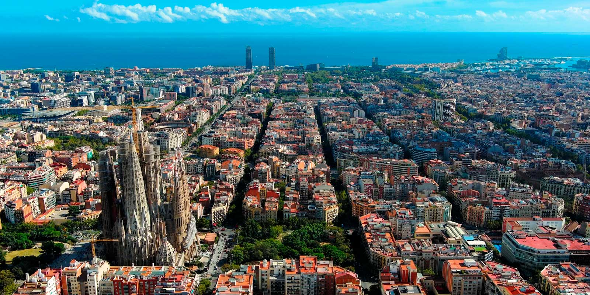

От 6 до 10 място за най-известните градове в света
6 място
Токио, Япония

Токио е столицата на Япония. Градът е една от 47-те префектури в страната и център на Голямо Токио, най-големият метрополен регион в света. Токио е седалище на японското правителство и на Императорския дворец. Разположен е в региона Канто в югоизточната част на главния японски остров Хоншу.
7 място
Сингапур

Република Сингапур е островен град държава в Югоизточна Азия, разположен в южната част на Малайския полуостров.Първите известни записки за Сингапур са в китайски текстове, датиращи от 3. век. По това време Сингапур е външната граница на царство Шривиджая, разположено на Суматра.
8 място
Лос Анджелис, САЩ

Лос Анджелис е град в Съединените американски щати, административен център на окръг Лос Анджелис в щата Калифорния. Той е най-големият град в Калифорния и изобщо на Западното крайбрежие на САЩ, както и вторият по население град в Съединените щати след Ню Йорк и едно от най-големите икономически, културни и развлекателни средища в света. В Лос Анджелис се намира и световната столица на киното – Холивуд.
9 място
Барселона, Испания
Барселона е град в Североизточна Испания, столица на автономната област Каталония и административен център на провинция Барселона. С населението си от 1 620 343 жители към 2018 г. е вторият по големина град в Испания и на 11-о място в Европейския съюз.
10 място
Мадрид, Испания

Мадрид е столицата на Испания. Населението на града е 3 141 991 души (2015 г.).Разположен на бреговете на река Мансанарес в централната част на страната. Като столица на кралството, седалище на правителството и резиденция на краля, Мадрид е също политическият, стопански и културен център на Испания.